Stop guessing.
Start training with purpose.
A custom workout program shaped around your goals, experience, equipment, and schedule. Know exactly what to do when you show up.

Limited coaching spots
Stop guessing what to eat or how to train. Get a personalized nutrition plan, custom workout program, and direct access to a coach — built around your goals, your body, and your life.
A more considered approach
No more piecing together random workouts and restrictive diets. Get a clear plan for how to train, what to eat, and what to do next — with a coach in your corner.
A custom workout program shaped around your goals, experience, equipment, and schedule. Know exactly what to do when you show up.
A personalized nutrition plan that works with your preferences and daily routine. Clear guidance, flexible choices, and less second-guessing.
Ask questions, talk through obstacles, and get your plan adjusted as life changes. Direct access to a coach, so your next step feels clear.
Your goals. Your routine. One plan that connects it all.
One plan. All the pieces connected.
Your training and nutrition should work together. Your coach connects the dots — helping you stay consistent, adjust when life happens, and move forward with confidence.
Find Your DirectionBuilt around your goals. Adjusted for your life.
The QuadFit method
Your goals set the direction. These five pieces turn it into a practical plan — built for your body, backed by your coach, and adjusted as you progress.
Your goals, training experience, routine, and preferences shape the plan from day one.
What this means for youA plan that starts with you, rather than asking you to fit a template.
PersonalA custom workout program built around your level, available equipment, and time.
What this means for youWalk into each session knowing what to train and how to move forward.
TrainClear, flexible nutrition guidance that works with the foods you enjoy and the life you lead.
What this means for youBuild repeatable eating habits without making every meal a guessing game.
FuelDirect access to your coach for questions, accountability, and guidance when you need clarity.
What this means for youTalk through the roadblocks and find a next step that works for you.
SupportReview your training, habits, and how you feel. Adapt the plan as your goals and routine evolve.
What this means for youKeep building on what works, with adjustments that help you stay consistent.
EvolveYour QuadFit journey
You don’t need to have it all figured out. Start with a conversation, build a plan with your coach, and take it one step at a time.
Tell us what you want to change. Message us on WhatsApp to start the conversation.
Share your routine, training experience, food preferences, and what tends to get in the way.
Talk through your goals and the coaching options, so you understand the approach before you commit.
Receive a workout program and nutrition guidance built around your goals and daily life.
Put your plan into practice. Ask questions and get support when you need help finding your rhythm.
Look at what is working with your coach. Adjust the plan and keep building on your progress.
Tell us your goals. Let’s find your direction.
The experience
A clear picture of your training, nutrition, and coach check-ins helps you focus on today — and see how the small steps add up. Here’s a preview of how it comes together.
A glimpse of your coaching experience
Three simple priorities. One clear direction.
Small steps. Steady momentum.
“Great work showing up this week. Let’s keep your next step simple and build from here.”
Your coaching kit
A practical toolkit for your everyday progress. Not a stack of plans to work through alone — a connected routine with a coach behind it.
Your exercises. Your pace. Your plan.
We adjust the plan. You keep moving forward.
FOUR PIECES. ONE PERSONAL PLAN.
A workout program built for your level, equipment, and available time. Clear exercises, sets, reps, and practical alternatives.
Know what to trainPersonalized nutrition guidance shaped around your preferences. Build balanced meals and repeatable habits with foods you enjoy.
Know how to fuel itAsk the question. Talk through the roadblock. Get personal guidance when you need help deciding what to do next.
Know where to turnLook at your training, nutrition, and consistency with your coach. Keep what works and adjust what no longer fits.
Know how to move forwardBuilt for your routine.
Backed by your coach.
Real support. Personal guidance.
A busy week, a food question, a workout you’re unsure about. Bring it to your coach and find a practical way forward.
Your goals, your routine, and the things that make consistency hard. Your coach helps you connect them.
Build balanced meals around foods you enjoy, with guidance that fits your day.
Short on time?A shorter, focused session.
25 minTraveling this week?Work with what you have.
AdaptRoutine changed?Reset your priorities together.
ReviewYour coach helps you adjust your training and habits around the week you actually have.
Bring the question that’s on your mind.
Find an approach that fits your reality.
Leave with a clear next step.
Designed for real life
Different starting points. Different routines. The same personal approach — training, nutrition, and coaching that work with your life.
Not a perfect week. A plan for your week.
Find My FitYour next chapter starts here
Two ways to invest in your routine. The same personal approach to training, nutrition, and coaching — with room to build at your pace.
A focused start to training with purpose and building habits that fit your life.
Talk it through with a coach first.
More time to strengthen your routine, work through changing weeks, and keep moving forward.
Build a longer view with your coach.
Not sure where to start? Let’s find your fit together
Find your fit
Clear expectations
People behind your progress
Good coaching connects the details. Your training, nutrition, and everyday habits get considered together — so your next step makes sense for you.
Your coach helps you work with your experience, equipment, and available time — with a clear direction for your sessions.
The difference is in the follow-through
Your week won’t always follow the plan. QuadFit connects the plan to your real life — with a coach to help you review, adapt, and keep going.
Pick a moment.
See how coaching connects the dots.
Your week has filled up, and your original workout schedule no longer fits.
Work with your coach to prioritize the main sessions and simplify the rest around your available time.
A realistic week beats an abandoned plan.
Clarity before commitment
You should understand what you’re signing up for. Start with your questions, talk through the details, and decide whether QuadFit fits your goals.
Start with what matters to you.
Get a clear picture of your coaching.
Review the commitment before purchasing.
Not sure about the workouts, food guidance, or fitting it around your week? Bring those questions to your coach.
Look at the program, price, duration, and service details together. Ask for clarification wherever you need it.
Take what you’ve learned and decide whether the coaching approach is the right next step for you.
Confidence starts with clear boundaries
Know what coaching covers, understand what you share, and keep your progress in perspective.
Understand the coaching, ask about what you share, and work with your coach on a direction that fits you.
Your coach considers your training, nutrition habits, and the week you actually have. Ask questions and understand the reasoning behind adjustments. Coaching supports your routine; it does not diagnose or treat medical conditions.
Your goals and routine help shape your plan. Before sharing sensitive details, ask what is needed, who can access it, and how it is handled. A clear conversation helps you make informed choices.
A single number never tells the whole story. Review your training, habits, and energy with your coach, then choose a practical next step. Your starting point and consistency matter; specific results are not guaranteed.
A few things worth knowing
Get a feel for the approach before you take the next step. If your question is more personal, let’s talk it through.
Ask us on WhatsApp ↗Your program brings together personalized workout planning, nutrition guidance, coach support, and progress reviews. Talk through the details of your chosen option with your coach before joining.
Tell your coach what equipment you have and where you are starting. Your training can be planned around your experience, available time, and environment.
The focus is practical nutrition habits and balanced choices that work with your food preferences and routine. Discuss your needs with your coach so you understand the approach.
The 12-week program is $499; the 24-week program is $999. If you are unsure how much time and support fits your goals, start with a conversation before deciding.
Start on WhatsApp using the buttons on this page. Ask about check-in arrangements and response times for your program before you join.
There is no single timeline. Your starting point, consistency, and circumstances influence your experience. Your coach can help you review training, habits, and progress in context; specific results are not guaranteed.
Confirm the full cost, payment arrangements, cancellation conditions, and any refund terms before purchasing. Your coach can help you find the information you need to make an informed choice.
Your first step
A few simple questions can help you put your starting point into words. Choose what fits your routine and see a practical direction to discuss with your coach.
Your goals. Your pace.A coach in your corner.